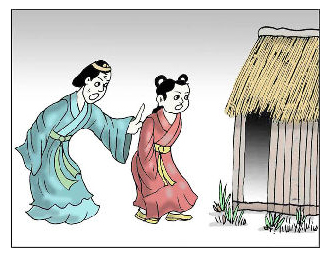
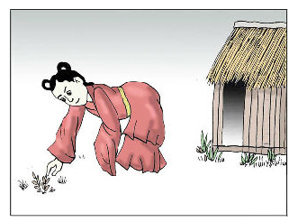
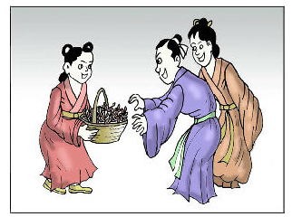

①从前有户人家，有三个儿子，老大老二都娶了媳妇，只有三儿子年幼,尚未婚配，老太太给他买了个童养媳。童养媳在家中倍受虐待，整天吃剩饭，干最脏最累的活。

②那一年，村里流行痢疾，突然童养媳也开始拉肚子。大嫂怕染病上身，就对婆婆说快把她赶走。婆婆一听，觉得在理，于是就把童养媳赶到菜园中的茅棚里。

③可怜的童养媳十分难过，关在茅棚里没吃没喝，直饿得两眼昏花，只好从地里边抓了许多野菜充饥，没想到吃了两天病竟意外好了。

④这时村里因痢疾死了很多人，童养媳便把野菜挖来给乡亲们吃，患痢疾的人都治好了。因野菜叶似马齿，便取名马齿苋，味酸、性寒，能清热解毒，是治痢良药。